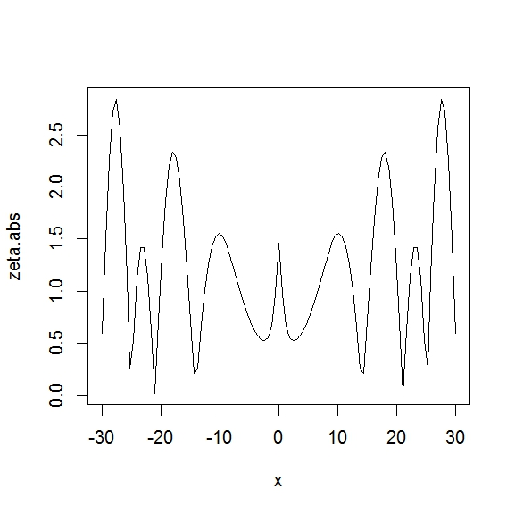

戻る
ーーーーーーリーマンゼータ関数（Racketを使って）－－－－－－
リーマンゼータ関数は次に表される関数 ζ のことです。
ζ(s)=1+1/2^s+1/3^s+1/4^s+・・・
Ｒａｃｋｅｔでは、(zeta s) で計算できます。
ただし、いろいろネットで検索してみましたが、
Ｒａｃｋｅｔでは、ｓ が実数しか計算してもらえないみたいで、
今回は s が複素数の場合は取り扱いません。
(zeta 2) は 1 + 1/2^2 + 1/3^2 + 1/4^2 +・・・
となります。
実行すると、1.6449340668482269 となります。
これは、(pai^2)/6です。
(zeta 1) は 計算してもらえずエラーとなります。
(1+1/2+1/3+1/4+/・・・)
以下にー２０から２０までの整数に対するゼータ関数の値を求めます。
（１については計算してもらえないので除きます）
(require (lib "1.ss" "srfi"))
(require math/special-functions)
(define (positive-list n)
(iota (- n 1) 2))
(define (negative-list n)
(iota (+ n 1) (- 0 n)))
(define (zeta-fact-p n)
(for ([i (positive-list n)])
(display (list i (zeta i)))
(display "\n")))
(define (zeta-fact-n n)
(for ([i (negative-list n)])
(display (list i (zeta i)))
(display "\n")))
> (zeta-fact-p 20)
(2 1.6449340668482269) 1+1/2^2+1/3^2+1/4^2+・・・=pi^2/6
(3 1.2020569031595945)
(4 1.0823232337111384) 1+1/2^4+1/3^4+1/4^4+・・・=pi^4/90
(5 1.03692775514337)
(6 1.0173430619844492) 1+1/2^6+1/3^6+1/4^6+・・・=pi^6/945
(7 1.008349277381923)
(8 1.0040773561979441) 1+1/2^8+1/3^8+1/4^8+・・・=pi^8/9450
(9 1.0020083928260821)
(10 1.0009945751278182)
=pi^10/93555
(11 1.0004941886041194)
(12 1.000246086553308)
=pi^12*691/638512875
(13 1.0001227133475785)
(14 1.0000612481350588)
(15 1.000030588236307)
(16 1.0000152822594086)
(17 1.000007637197638)
(18 1.000003817293265)
(19 1.0000019082127165)
(20 1.0000009539620338)
> (zeta-fact-n 20)
(-20 0)
(-19 174611/6600) ２６．４５６２
(-18 0)
(-17 -43867/14364) －３．０５３９
(-16 0)
(-15 3617/8160) ０．４４３２
(-14 0)
(-13 -1/12) －０．０８３３
(-12 0)
(-11 691/32760) ０．０２１０
(-10 0)
(-9 -1/132) ０．００７５７
(-8 0)
(-7 1/240) ０．００４１６
(-6 0)
(-5 -1/252) －０．００３９６
(-4 0)
(-3 1/120) ０．００８３３
(-2 0) 1+4+9+16+・・・=0
(-1 -1/12) 1+2+3+4+・・・=-1/12
(0 -1/2) 1+1+1+1+・・・=-1/2
>
級数の和がおかしな気がしますが、私の勝手解釈では、
あまり急激に発散するともとにもどってきて有限の値になるという感じでしょうか。
ｓ＝１（1+1/2+1/3+1/4+・・・）のときがその境目なのでしょう。
(zeta -1)=1+2+3+4+・・・=-1/12
は物理的に意味があるようで、カシミール効果というそうです。
ｓが－２、－４、－６ ・・・のように負の偶数の時はゼータの値は０になります。
（リーマン予想の「自明な零点」です）
ーーーーーーリーマン予想（Ｒを使って）－－－－－－
リーマン予想は、リーマンゼータ関数の値についての次の予想である。
ζ(s) の自明でない零点 s は、全て実部が1/2の直線上に存在する。
Ｒを使うとｓが複素数でも計算できます。
（ゼータ関数を使うにはＲ言語のパッケージーｐｒａｃｍａパッケージを
インストールする必要があります。
pracma: Practical Numerical Math Functions）
このあたりの情報は、次のサイトから得られました。
http://d.hatena.ne.jp/ryamada/20131009/1381192850
また、ｓ＝１ のときも zeta(1) で一応答えを Ｉｎｆ（無限大） として出してもらえます。
（Ｒａｃｋｅｔではエラーとなり答えを出してもらえませんでした。）
s=0.5+x*1i の形で、どんな x で zeta (s) が０になるか。
答えをみてしまって恐縮ですが、自明でない零点は
x = ±14.135, ±21.022, ±25.011 などに現れます。
（自明でないゼータ関数のゼロ点の分布は原子核のエネルギー間隔と似ているそうです）
Ｒ言語で実際のコードを実行させると、次のように大体 ０ になります。
> zeta(0.5+14.135i)
[1] -3.42516e-05+2.153042e-04i
> zeta(0.5+21.022i)
[1] -9.85791e-06-4.397692e-05i
> zeta(0.5+25.011i)
[1] -6.40949e-05+1.844605e-04i
ｓ＝0.5+x*1i でｘをー３０から３０の間のゼータの値の絶対値を
グラフにプロットすると下のグラフになります。
（以下のサイトを参考にさせていただきました。
http://ktblog820.blog122.fc2.com/blog-entry-256.html）
Ｒ言語のコードは次のとおりです。
zeta.abs <- function(x) (abs(zeta(0.5+x*1i)))
plot(zeta.abs, -30, 30)

（次のサイトを参考にさせていただきました）
https://blogs.yahoo.co.jp/runomee/47204520.html
http://d.hatena.ne.jp/ryamada/20131009/1381192850
ーーーーーーリーマンゼータ関数の関数等式ーーーーーー
リーマンゼータ関数の関数等式は次のものです。
zeta(s)=2^s*pi^(s-1)*sin(pi*s/2)*gamma(1-s)*(zeta (1-s))
zeta (-1) をこの関数等式を計算してみると、（ゼータのー１をゼータの２の値から計算できます）
zeta (-1)=2^(-1)*pi^(-1-1)*sin(pi*(-1/2))*gamma(1+1)*(zeta (1+1))
=1/2 *(1/pi^2)*(-1)*1! *(pi^2/6)
=-1/12
（gamma はΓ関数（ガンマ関数）で、Γ(n + 1) = n! の性質があり、
gamma(2)=1!=1 です。）
zeta (-2)=2^(-2)*pi^(-2-1)*sin(pi*(-2/2))*gamma(1+2)*(zeta (1+2))
zeta(-2) は 右辺にsin(-pi)があり ０ になります。
Ｒを使って ｓ が －２０～ー１まで計算させると次になります。
(関数等式を使ってmy.zetaとして新しく関数を定義します）
my.zeta <- function(s) 2^s*pi^(s-1)*sin (pi*s/2.0)*gamma(1-s)*zeta(1-s)
for (s in -20:-1){
cat(s, my.zeta(s),"\n")}
-20 1.031274e-13
-19 26.45621
-18 -9.642583e-15
-17 -3.053954
-16 1.105813e-15
-15 0.4432598
-14 -1.591652e-16
-13 -0.08333333
-12 2.959578e-17
-11 0.0210928
-10 -7.378967e-18
-9 -0.007575758
-8 2.593341e-18
-7 0.004166667
-6 -1.379851e-18
-5 -0.003968254
-4 1.24485e-18
-3 0.008333333
-2 -2.373788e-18
-1 -0.08333333
前にＲａｃｋｅｔを使ってゼータ関数の値を求めたのと大体同じ結果がえられました。
（ｓ＝－２、－４、－６などの負の偶数は０になります。
リーマン予想の自明な零点です。）
ゼータ関数で、ｓ＝－１を ｓ＝２のゼータの値を使って求める、
－２を３から求めるというのは、
ちょうど中点が０．５ですから（つまり０．５を境に左右対称になっています）
リーマン予想の実部が０．５のクリティカルラインになっていることと関係しているような感じです。